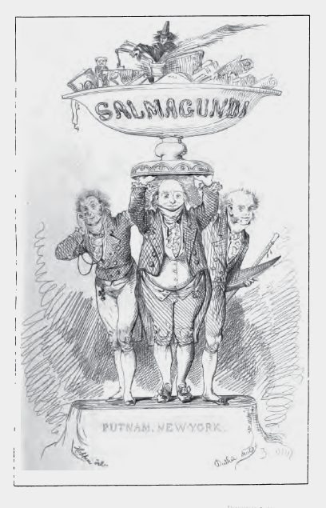
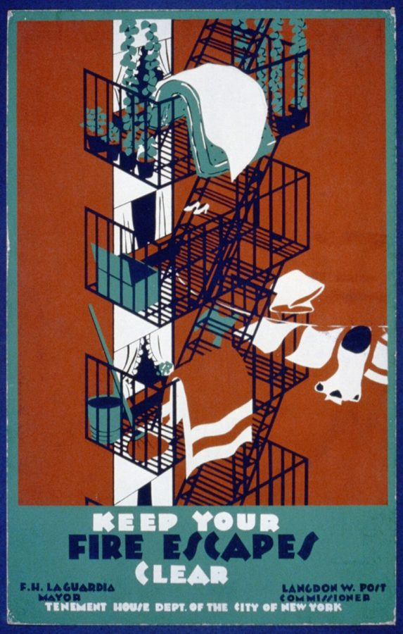
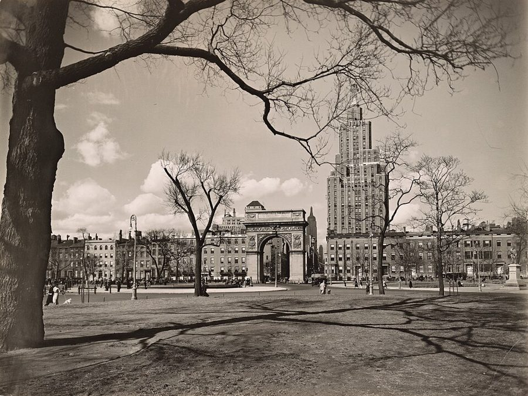

读之前
这一页是报告 14 的开头：6 月 15 日到 19 日，三条。查理刚从芝加哥带着 Algernon 回到纽约，没有回原来的住处，一个人在城里落脚，仍然对着录音机口述。读的时候抓两条线：一条是家里的过去，大会结束时他说要尽快去见父母，留意这几天他离这件事是近了还是远了；一条是他在新地方怎么安排日子、怎么和陌生人打交道。
手术三个多月，智商约 185，已经离开面包店。和 Alice 吵过一架。在芝加哥的大会上，他发现 Nemur、Strauss 也是凡人，结论还下早了；台上他觉得自己和 Algernon 一样被当成展品，当场放出 Algernon，在一片混乱里揣着它坐飞机回了纽约。飞机上他说：先去见父母，越快越好。
读的时候带着这几个问题。不用先找答案，读完回来对照「检查一下理解」。
报纸上的什么东西把查理拉回了小时候？他问自己「过去值得知道吗」，他心里倾向哪个答案？§1
§1 的回忆里，叙述从「我」换成了「他」，后来又换回「我」。换回来的时候，现在的查理想对那个孩子做什么？§1
他打算怎么安排 Algernon 的日子？对照 13b 大会上让他气不过的那件事读。§2
留意查理怎么收拾自己的屋子，又怎么看见别人的屋子。两个人各自受不了的是什么？§3
分节地图
这一页有三条带日期的报告。读完一条打个勾；每条下面的英文是那一条开头的几个词，在 Kindle 里搜它就能跳过去。没读的那几行先模糊着，免得提前看到情节，点一下就能看清。全页约 4000 词，一次读完。
6 月 15 日约 1600 词 Our escape hit the papers yesterday, … 报上的消息。留意它把查理的念头引向了谁，回忆里的人称在哪里变了。 6 月 16 日约 300 词 Called Alice, but hung up before … 很短的一条。留意他给自己和 Algernon 安排的日子。 6 月 19 日约 2100 词 Met Fay Lillman, my neighbor across … 认识对门的邻居。留意他怎么看邻居的屋子，邻居又怎么看他的屋子。
背景：书里默认你知道的事
按在书里出现的顺序排，标题前是节号。人名后面括号里是中译本的译名，读者想对照译本时用。
§1 这一页提到的人§1 回到查理小时候的家。下面几张卡片只写你此刻已经知道的。
Rose Gordon 罗丝 母亲。报告 10 里查理想起她的名字：瘦，说话快，头发盘成髻，坚持说他正常、逼他学；报告 11 的回忆里，她因为他看女孩拿皮带抽他。
Matt Gordon 马特 父亲。报告 8 里他因为 Norma 挖苦查理打了她一耳光；报告 10 里他劝 Rose 别再假装孩子正常。
Norma 诺尔玛 妹妹，查理六岁那年出生（报告 10）。和母亲住在布鲁克林，手术是她同意的（报告 5）。
Alice Kinnian 艾丽斯 成人班的老师，手术后一直教查理，查理爱她。报告 12 里两人第一次真正吵架，她没有去芝加哥。
§1 小报tabloid 本指开本只有大报一半的报纸，在美国多指靠大照片、大标题和耸动新闻卖钱的小报。纽约的 Daily News 1919 年创刊，是美国第一份小报开本的日报，靠坐地铁上班的读者起家，1947 年日销量到过 240 万份。书里的 Daily Press 本站没有查到纽约真有这家报，当它是书里的报纸。标题里的 moron 是当时的分级用词，报告 10、12 的页面有详细说明。
§1 纽约的五个区纽约市分五个区（borough）：曼哈顿、布朗克斯、皇后区、布鲁克林、史坦顿岛。查理这些年在曼哈顿的面包店干活，母亲和妹妹住在布鲁克林，同在一座城里，他很久很久没见过她们。长岛（Long Island）从市区往东伸出去很长，布鲁克林和皇后区就在它的西头；纽约人说长岛，多指市界以东那一大片。书里的 Warren 之家在长岛，是虚构的，报告 7 的页面有详细说明。
新泽西
哈得孙河
曼哈顿
中城：时代广场、
41 街、43 街一带
布朗克斯
皇后区
布鲁克林
母亲和妹妹住这里（报告 5）
史坦顿岛
长岛
一直往东
大西洋
本站示意图：纽约五个区的大致位置，形状和比例都不准，只看谁在谁旁边。长岛只画了一小截。 §1 Gotham、melting pot、Baghdad-on-the-Hudson§1 末尾查理一口气念出纽约的三个外号。Gotham 来自英国民间笑话里一个满村傻瓜的村子，Washington Irving 1807 年在讽刺刊物 Salmagundi 上拿它来叫纽约。melting pot（大熔炉），比喻各国移民在这里熔成美国人，是 Zangwill 1908 年首演的剧《熔炉》让它流行开的。O. Henry 的短篇里把纽约叫作 Bagdad-on-the-Subway（地铁上的巴格达），说的是《一千零一夜》里那座无奇不有的城；Baghdad-on-the-Hudson 是后来的人改的。

Salmagundi 后来结集重印时的书名页，图片说明写的是 1869 年的重印本。William Irving、Washington Irving、James Kirke Paulding 等，公有领域，维基共享资源 §1 时代广场西边查理先住进 41 街的 Camden 旅馆（书里的旅馆），离时代广场一个街区；后来租的公寓在 43 街和第十大道（Tenth Avenue）的路口，在时代广场西边三个大道。街和大道怎么数，报告 11 的页面有一张中城的示意图。这一片俗称 Hell’s Kitchen（地狱厨房），书里没有点这个名字。这一带多是老式的砖砌公寓楼，楼的正面挂着铁的消防梯（fire escape），窗户一推开就能踏上去，§3 要用到它。

纽约市租住房屋管理局 1930 年代的海报：「消防梯上别堆东西」。底下署着市长 La Guardia 的名字。美国公共事业振兴署（WPA）海报，公有领域，维基共享资源 §3 格林尼治村格林尼治村（Greenwich Village）在曼哈顿南部，街道不按棋盘走，二十世纪初起就是画家、作家扎堆的地方。1950 年代这里的酒吧和咖啡馆是画家、诗人聚会、高谈阔论的去处。§3 有人说宁可住得离它远一点，理由就在这里。phonies（装模作样的人）和 dilettantes（玩票的半吊子）是对那一类人的刻薄说法。

格林尼治村中心的华盛顿广场，往北看是广场的拱门和第五大道 1 号的高楼。Berenice Abbott 摄于 1936 年。Berenice Abbott，公有领域，维基共享资源 §3 废品雕塑和现代艺术博物馆现代艺术博物馆（Museum of Modern Art，MoMA）1929 年在纽约成立，在中城 53 街。1950 年代起，有一批美国艺术家拿报废的东西做雕塑：John Chamberlain 用报废汽车的零件，Richard Stankiewicz 用废铁。1961 年 MoMA 办了「拼集艺术」（The Art of Assemblage）大展，130 位艺术家的 250 件作品，他们都在里头。§3 里的 junkmobiles 和 tincannia 是书里人物随口造的词，拿的就是这股风气开玩笑。
词与短语
三类：紫边的「查理拼的」是他拼错的词，先写还原的拼法；黄边的「每个字都认识」是熟词生义、俚语、别人话里的弦外之音；其余是这里用法特别的词。斜体小字是原句里的几个词，在 Kindle 里搜它就能找到原文，拼错的照拼错的抄。这一页没有拼错的词。
§1 6 月 15 日
hit the papers
… Our escape hit the papers yesterday, …
上了报
hit 在这里是「出现在、登上」，也说 hit the headlines。
have a field day
… and the tabloids had a field day.
大做文章，乐得借题发挥
field day 本是学校的运动会日、军队的野外演习日。转义是「尽情折腾一番的好机会」，多带贬义。
go berserk
… Moron-Genius and Mouse Go Berserk.
发狂，失控
berserk 来自北欧传说里打起仗来发狂的战士。Moron-Genius 是报社拼出来的「白痴天才」。Moron 和 Mouse 都是 M 开头，读着顺口，小报标题爱这样做。
do one’s legwork
… had obviously done his legwork.
跑腿查访，下了功夫去挖材料
legwork 是「靠两条腿跑出来的活」，记者、侦探常用。查理语气里带点讽刺。
gauze
… through the gauze of childhood.
（隔着）一层纱
gauze 是纱布、薄纱。照片拍得清楚，他看过去仍隔着童年那层朦胧。
drawn
… Thin, drawn into exaggerated lines. …
（脸）绷紧的，憔悴的
drawn 作形容词说脸，是因疲惫、忧虑而紧绷消瘦，不是「画出来的」。
know the storm warnings
… my sister knew the storm warnings, …
看得出风暴要来
storm warnings 是气象台的风暴警报，这里指母亲发火前的小动作。同一句后面的 out of range 是「在射程（风暴圈）之外」：妹妹总能先躲开。
catch someone unawares
… it always caught me unawares.
让人措手不及
unawares 是副词，「没防备地」。
the cathedral of my childhood
… carved above the cathedral of my childhood …
我童年的大教堂
把母亲那句「他是个好孩子」比作刻在教堂门楣上的铭文：童年整座建筑都顶着这句话。译本：「铭刻在我童年记忆中的话语」。「铭刻」留住了，教堂没有了。
bassinet
… myself and father leaning over a bassinet.
（带篷的）婴儿睡篮
给刚出生的婴儿睡的小篮床。
orchid-figured comforter
… on the orchid-figured comforter, raising her …
印着兰花图案的被子
figured 在这里是「印着花样的」；comforter 是厚棉被，不是「安慰的人」。
one’s prayers are answered
… sure her prayers had been answered, …
祈求的事应验了
她求的是：Norma 别像查理那样。
the here and now
… to contaminate the here and now.
眼下，此时此地
固定说法，here 和 now 当名词用。contaminate（污染）是很重的词。
ajar
… yellow light from the door ajar …
（门）半开着的
放在名词后面。这道门缝里的光，第 33 段还会再出现一次。
have one’s way
… used to having her way through hysteria.
（总能）让别人依着自己
have one’s way 是「随自己的意」。整句说母亲是那种惯于靠歇斯底里大闹来达到目的的人。
put someone away
… Better for him to be put away.
把人送进（收容机构）关起来
put away 平常是「收起来、放好」，说人就是送进精神病院、收容所甚至监狱。母亲这一段说了好几次。
one’s own kind
… at the Home with his own kind …
（和他）同一类的人
字面是「同类」，用来说一个人时常带着排斥：「他们那种人」。
feeder
… brusque movements of the feeder—involuntary, …
喂食的人
在这里是给鸟和松鼠撒食的人，不是喂食器。喂的人手一猛，鸟和松鼠就本能地往后退。
get one’s bearings
… give me time to get my bearings.
弄清方向，站稳脚跟
bearings 是航海、测量里的方位。到了陌生处境里先定下神来，就是 get one’s bearings。
tape
… I keep taping my progress reports, …
录音（录下进步报告）
他还是对着录音机口述，报告 13 的页面有详细说明。
be in the dark
… Let them be in the dark …
蒙在鼓里，什么都不知道
「让他们先蒙在鼓里」，指不让实验室的人知道他在哪。同一句后半又用了一次，见读后的「值得停下来的句子」。译本：「就让他们在黑暗中待一阵子吧」。字面的黑暗留住了，蒙在鼓里那层意思要读者自己补。
pick up
… I’ll pick up at this point tomorrow.
（从中断处）接着讲
pick up 不带宾语，是「接着往下」。他困得睁不开眼，明天从这里接着录。译本：「我明天会再拾起这个论点」。point 在这里是说到的这个地方，不是论点。
§2 6 月 16 日
furnished apartment
… Today I found a furnished apartment.
带家具出租的公寓
家具是房东的，拎包就能住。这一间连钢琴都是租来的。
pull something out
… the rental service will pull it out, …
把（租出去的东西）收回搬走
rental service 是出租钢琴的公司。
gateleg table
… at the small gateleg table.
折叠桌（腿能像门一样转出来撑住桌板）
两边的桌板放下来很窄，用时把腿转出来、把板支平。小公寓里常见。
root for
… I think he rooted for the Yankees.
为……加油，支持（某队）
root 不是「生根」，美国口语里是给球队喊加油。Yankees 是纽约洋基队，主场在布朗克斯。
downtown
… that I can pick up cheaply downtown.
（纽约的）下城，曼哈顿南部
在纽约，downtown 指曼哈顿南头那一片，不只是泛泛的「市中心」；§3 有人「去 downtown 的舞厅」也是这个意思。pick up 在这里是「顺手买到」。
keep in shape
… to be sure he keeps in shape.
保持状态
平常多说身材、体能，这里说的是 Algernon 走迷宫的本事别退步。
§3 6 月 19 日
lock oneself out
… I discovered I had locked myself out, …
把自己锁在门外
钥匙忘在屋里，门一关就进不去了。这一条的事都从这里起头。
fire escape
… the front fire escape connected my …
（楼外的）消防梯
见「背景」。front 是临街那一面。
a shambles
… The place was a shambles. …
一片狼藉
shambles 原指肉铺、屠宰场，后来指乱成一团的地方。
linseed oil
… odor compounded of paint, linseed oil, …
亚麻籽油
调油画颜料用的油；后面的 turpentine（松节油）是稀释颜料、洗笔用的。屋里是一股油画画室的味道。
overstuffed
… Three overstuffed chairs and a mangy …
（沙发、扶手椅）软垫塞得鼓鼓的
说家具时是一种厚软垫的款式，不是「塞得太满」。椅子上倒确实也堆满了衣服。
mangy
… a mangy green couch were piled …
破旧掉毛的
mange 是动物的疥癣，mangy 说东西就是秃一块、破一块。
be dying to
… I’ve been dying to get a peek …
想……想得要命
和死没有关系。get a peek at 是「偷偷瞄一眼」。
burble
… I burbled, for want of something …
（慌乱地）嘟囔，冒出一句
本义是水咕嘟咕嘟地响。查理拿来说自己没话找话。
for want of
… for want of something to say.
因为没有……，由于缺……
want 在这里是名词「缺乏」，不是「想要」。
cooking sherry
… right now except cooking sherry. …
做菜用的雪利酒
便宜的料酒，不是用来喝的，所以她自己先说「你不会想喝这个吧」。
get hold of oneself
… getting hold of myself and fixing …
定下神来，控制住自己
不是「抓住自己」。
beauty mark
… the beauty mark on the left …
美人痣
脸上的小黑痣。他把目光定在这颗痣上。
patent lock
… Those lousy patent locks are a …
（门一带上就锁住的）新式锁
patent 是「有专利的」，旧时商品爱标榜这个。看她接下来讲的遭遇，说的是门一关就自己锁上的那种。lousy 是「烂的」。
a pain in the ass
… are a pain in the ass.
讨厌透了的东西
粗话。她嘴里的 goddamned、damned 一句接一句，查理大概皱了眉，她就笑了。
stark naked
… out in the hall stark naked …
一丝不挂
stark 在这里是「完全」，只和 naked、mad 等少数词连用。
have a rotten time
… They’d have a rotten time finding …
费老大劲，够受的
rotten 是「烂的、糟糕的」。她的意思：小偷进来也找不到值钱的东西。
holes in all the wrong places
… it had holes in all the wrong …
洞都破在不该破的地方
话说得含蓄：该遮的地方偏偏破了。查理照样松了口气，总算能正眼看她。
snub nose
… pert snub nose gave her a catlike …
短而微翘的鼻子
pert 是「俏皮的」。
phonies and dilettantes
… away from the phonies and the dilettantes.
装模作样的人和玩票的半吊子
见「背景」。phony 这个词，13b 里查理刚拿来骂过 Nemur 和 Strauss。
sneerer
… You’re not a sneerer, are you?
爱冷嘲热讽的人
sneer 是「冷笑、嗤之以鼻」，sneerer 就是这样的人，不常用。查理马上回敬：你自己不也在嗤笑那些人吗。
cash something in
… I’ve got to cash them in.
（把空瓶）拿去退押金换钱
cash in 是「兑成现金」。当时不少啤酒瓶是可以退回店里拿押金的，她窗边堆着一袋袋空瓶。
neat
… a place as neat as this.
整洁的
neat 口语里也是「真棒」，这里是本义「整齐干净」。
compulsion
… I’ve had the compulsion to keep …
（控制不住的）冲动，强迫
心理学用语，查理说得很准：不是喜欢整齐，是不整齐就难受。
I’ll bust
… Tell me you dance and I’ll bust.
（你要说会跳，）我就高兴死了
bust 是口语的 burst，「乐得要炸了」。
fox trot
… Only the fox trot,” I said, …
狐步舞
二十世纪初流行起来的交谊舞，步子平稳。她刚才哼的是拉丁节拍，要的是更花的舞。
be nuts about
… I’m nuts about dancing, but nobody …
迷……迷得发疯
nuts 作形容词是「疯的」。§3 末尾还有一个当名词用的 nut。
get dolled up
… get myself all dolled up once …
打扮得漂漂亮亮
doll 是洋娃娃。打扮得像个娃娃，多说女人盛装出门。
morbid
… lined up this way I get morbid.
（心情）阴郁，老往死上想
她刚把墙角的方盒子比作棺材。
let me have five
… could you let me have five …
借我五块钱
five 后面省了 dollars；until the twentieth 是「到（这个月）二十号」。let me have 是客气地「借我」。
alimony
… That’s when my alimony check comes.
（离婚后的）赡养费
离婚后一方按期付给另一方的钱。她没明说，这一句多半是说她离过婚。
fool around with
… I heard you fooling around with it …
随手摆弄
这里说他随便弹弹钢琴。fool around 在别的场合也有「乱搞男女关系」的意思，这里不是。
be free with
… suddenly became so free with my place, …
（把自己的东西）大方地让人用
free 在这里是「不吝惜」。查理自己也说不清为什么。
go mad for
… They’ll go mad for it at …
喜欢得发疯
不是真「发疯」，是「抢着要」。她说的是现代艺术博物馆，见「背景」。
the greatest thing since …
… Charlie, it’s the greatest thing since …
自……以来最了不起的东西
常见说法是 the best thing since sliced bread（切片面包问世以来最好的东西），夸一样新东西，常带调侃。她把切片面包换成了两个自己编的词。
junkmobiles and tincannia
… the greatest thing since junkmobiles and tincannia.
（她编的）废品活动雕塑和锡罐艺术
词典里没有，是她现编的。tin can 是罐头盒；junkmobile 看着像 junk（废品）加 mobile（Calder 那种吊在空中会转的活动雕塑），这是本站的猜测。译本：「这是自从波普艺术以来最伟大的东西」。两个编出来的词换成了一个真有的艺术流派，玩笑的味道淡了。
self-perpetuating
… It could be self-perpetuating art,” she …
能自我延续的
她接着解释：再弄一只老鼠，生了小的留一只，作品就「不朽」了。全是逗他的话。
conversation piece
… people buy copies for conversation pieces.
引人谈论的摆设
摆在客厅里、让客人有话可聊的东西。
goal-box
… found his way into the goal-box.
（迷宫的）终点箱
动物实验的术语：迷宫尽头放奖励的小格子。13b 大会上那篇「T 形迷宫左边和右边的终点箱」说的就是它。
Life is just a box of mazes
… Life is just a box of mazes? …
人生不过是一盒迷宫
套的是 1931 年的流行歌 Life Is Just a Bowl of Cherries（人生不过是一碗樱桃，意思是别太当真，好好享受），Ethel Merman 在百老汇的歌舞秀里首唱。樱桃换成了迷宫，碗换成了盒子。不是《阿甘正传》那盒巧克力，那部电影晚了快三十年。
You’re a nut!
… You’re a nut!” I said.
你这个疯子！
nut 当名词是「怪人、疯子」，说得亲昵时没有恶意。她答「当然」，还行了个礼。
curtsy
… She spun around and curtsied. …
行屈膝礼
女子弯膝、微微下蹲的礼，这里是做戏。
Thanks a mill.
… the check comes. Thanks a mill.
太谢谢了
Thanks a million 的省略说法。
crumple
… She crumpled the money, blew Algernon …
揉成一团
五块钱在她手里揉成一团就塞走了，看得出她拿钱的样子。译本：「把钞票折好收起来」。原文是揉皱，不是折好，人物的样子差了不少。
查理的文字
切到「长词」：13b 大会那几天，第一条和最后一条都在 8% 以上；这一页三条回到 3.0%、3.8%、4.3%。Nemur 讲的酶、Strauss 的手术、论文的题目都留在了芝加哥，这一页说的是母亲的脸、一间屋子、一个邻居。拼错的词还是零。第 38 段他说要接着「录」进步报告：这一页仍是口述，句子是说出来的。
第 24 段起，回忆又换成第三人称：躺在床上的是 Charlie，是「他」，和报告 9 §8 那次一样；到第 33 段换回「我」，现在的他看着床上那个孩子，想伸手安慰他。§3 一大半是邻居的话，粗口几乎都在她嘴里，查理只在最后一段说了一个 damned。
记忆拼图
查理的童年是一段一段想起来的。每段一张卡片：想起了什么，是被眼前的什么勾起来的。年纪是从书里推的，推不出来的写「年纪不详」。读过的页的卡片会汇总到记忆拼图 ，按年纪排好。
母亲的两个样子 母亲在他眼里是两个人，他永远猜不到这回是哪一个：有时一阵怒气砸下来，有时把他搂得像泡在温水里，摸着他的头说他和别的孩子一样，是个好孩子。妹妹看得出风暴要来，他看不出。是报上母亲的脸勾起来的。
§1 婴儿篮旁边 父亲牵着他的手，俯身看婴儿篮里的妹妹：她太小，不能碰，等她长大就有人陪你玩了。母亲躺在旁边的大床上，脸色苍白，抬起头说：看好他，Matt。是盯着报上的照片、照片像化开了一样时看见的。
§1 门缝里的一道光 大了好些以后。他躺在黑屋里，门缝透进一道黄光，父母在外面吵：母亲要请 Dr. Portman 安排把他送进 Warren 州立之家，说不能为他牺牲女儿；父亲说他不会伤害她。他听不懂，缩进被子里。是想把母亲赶出脑子时自己渗回来的。
§1 值得停下来的句子
I see now that when Norma flowered in our garden I became a weed, allowed to exist only where I would not be seen— §1，6 月 15 日，看着报上的照片。本站译：我现在明白了，Norma 在我们家的园子里开了花，我就成了一株杂草，只许长在没人看得见的地方
flower 在这里当动词，是「开花、长成」。比喻的前一半是妹妹，后一半是他自己。这句话说了母亲的变化从哪天开始，也说了变化的样子：杂草不用拔掉，只要长在看不见的角落和暗处就行。下一段回忆里，他正躺在一间黑屋子里，门外在商量把他送走。译本：「如果诺尔玛现在是我们花园中盛开的花朵」。原文说的是当年的一段往事，译本加了如果和现在，读起来像一个假设。
Let them be in the dark for a while; I was in the dark for more than thirty years.— §1，6 月 15 日的结尾。本站译：让他们蒙在鼓里一阵子吧；我在黑暗里过了三十多年。
同一个 in the dark 用了两次。前一个是「不知情」：Nemur 他们不知道他和 Algernon 在哪。后一个两层都有：三十多年他不知道别人在笑他、不知道自己是谁，也像这一页回忆里那个躺在黑屋里、听不懂门外在吵什么的孩子。本站的读法：前一半是他这几天对别人做的事，后一半是三十多年别人对他做的事，他把两件事放进了一句话。
读完想一想
1. 查理问：过去值得知道吗？他想当面对母亲说「我不再迟钝了，我是天才」。你觉得他要的是知道过去，还是要母亲看见现在的自己？
本站的看法 本站觉得两样他都要，后一样更急。他自己也说不清：一会儿说见她有什么用，一会儿又好奇她会怎么反应。可他想好的那句话是要母亲承认他，不是要她告诉他什么。而他刚在芝加哥气的，正是 Nemur 说手术前的查理不算存在。这一页他把见母亲往后推了：「还不是时候」。
2. 邻居受不了直线和方盒子，说像棺材，喝点酒线条就弯了；查理说屋子一乱他就心烦。她看见查理给 Algernon 搭的迷宫，叫它「全是方盒子和直线」的雕塑。你怎么看这两个人？
本站的看法 两个人都拿屋子来对付心里的东西。查理说整齐是搬进来以后才有的「强迫」，不像天性，倒像在一个人的新生活里抓住点什么。她把乱和醉当成自在，门都不锁。他刚逃出一个把他当实验动物的地方，回头就在自己家里搭了一座迷宫。说它是「一盒迷宫」的，是一个刚认识他、什么都不知道的人。这是本站的读法。
楼前的消防梯（四楼）
邻居的屋子
画、颜料、空啤酒瓶，到处是灰
门：锁早拆了
走廊
门：锁着
客厅
钢琴、折叠桌
窗：不锁
Algernon
塑料迷宫
另外两间
邻居：从不锁门
查理：样样整齐
本站示意图：按 §3 的描写画的两户人家。书里没给平面图，房间的位置和朝向是本站摆的，只看门、窗和消防梯怎么连。 3. 查理怪母亲：她要是不听医生、老师那些人的话就好了，那些人急着让她相信他是「moron」。可回忆里的母亲也说，这些年人人都劝她把他送走。这件事里你会怪谁？
本站的看法 书里给了母亲的处境，也给了查理的伤，没有替谁开脱。本站的看法：查理此刻恨她，恨的是她信了别人以后收回的爱，这比送不送走更早，也更说不清。父亲那句「现在有了她，你就不要他了」，说的也是这个。母亲这一边的话，这一页只有回忆里那几句。
对照今天
成立 后来的事实印证了这个说法部分成立 一部分对，一部分被后来的事改了被改写 后来的事实推翻了它，或者完全变了样书里的说法：家里有个像查理这样的孩子，可能对妹妹的成长有坏影响（Rose，§1 的回忆）
书里 母亲要把查理送去 Warren，理由之一是怕他对 Norma 不好；父亲说查理不会伤害她，她这个年纪也不会受影响。母亲还说，这些年人人都劝她把他送走。
当时 1950 年代，美国医生常劝父母把智障孩子送进收容机构。也有不肯照办的家长：1950 年他们成立了全国性的家长组织，就是今天的 The Arc。
今天 英国一项按全国出生队列做的研究（Hayden 等，2019）比较了 257 个弟弟或妹妹有智力障碍的孩子和 7246 个没有的：心理行为问题偏多的分别占 13.9% 和 8.9%；把家庭经济、主要照顾者的心理压力、单亲等因素算进去以后，多数方面的差别就不显著了。作者说差别主要来自家里的处境。研究看的是哥哥姐姐，和书里正好反过来。核对于 2026-10。依据：Hayden、Hastings、Totsika、Langley，Journal of Abnormal Child Psychology（2019）；The Arc 的历史介绍。
检查一下理解
先在心里答，再点开。答错的那题，回书里把对应那一条再读一遍。
1.（§1）Nemur 和 Strauss 悬赏 500 美元找 Algernon。查理说他们没意识到什么？ 没意识到 Algernon 和查理在一起：是查理在大会上放走了它，又揣着它坐飞机回了纽约。报上他们还说查理压力太大，肯定很快就会回来。
2.（§1）报上 Norma 说，母亲告诉她查理怎么了？和报告 8 里 Donner 说的对得上吗？ 母亲说他被送进了 Warren，几年后死在那里；Norma 一直以为他死了，直到 3 月 Beekman 心理系的主任来找她同意手术。报告 8 里 Donner 说，Herman 死后母亲把查理送进了 Warren，是 Donner 出面让他出来做工。「送进 Warren」对得上，「死了」对不上。
3.（§1）门缝那段回忆里，谁要把查理送走，谁拦着？各自怎么说？ 母亲要送：怕他对妹妹不好，人人都劝她送，她不能为他牺牲女儿，在之家和「他那样的人」在一起也许对他更好。父亲拦：查理不会伤害她，她这个年纪也没影响；又说，现在有了女儿，你就不要他了。
4.（§1）查理为什么不马上去见母亲？手头的钱从哪来？ 他说还不是时候，要先自己想清楚。一到纽约他就把存款全取了出来，886 美元，撑不了多久，但够他先站稳脚跟。
5.（§2）他打算怎么安排 Algernon？ 把第二间卧室的家具搬走，给 Algernon 住；用下城便宜买来的塑料边角料搭一座立体迷宫，教它复杂的变化，让它保持状态；还想找一种食物以外的奖励。
6.（§3）查理为什么去敲对门？她的门为什么从来不锁？ 他抱着杂货把自己锁在了门外，想借她屋里的窗户走楼前的消防梯，爬回自己的窗。她说那种锁只会把自己锁在外面，楼里一年十五起盗窃，被偷的都是锁着门的人家。
用一句话说这一页：
精彩回顾
隔几周回来，先看这几张卡片。想不起来的那张，点节号回到这一页，再回书里那一条。
一句话： 报纸把母亲的脸送到查理眼前，他躲进一间整齐的公寓，窗外的消防梯通向一个从不锁门的邻居。
Moron-Genius and Mouse 小报登了他的旧照片和一只白鼠的素描，Nemur 和 Strauss 悬赏 500 美元找 Algernon。他们不知道它正跟查理在一起。
§1 园子里的杂草 妹妹出生后，母亲的声音、眼神全变了。他说 Norma 在园子里开了花，他成了只许长在角落和暗处的杂草。
§1 门缝里的光 黑屋子里，门缝透进一道黄光，父母在外面为送不送他去 Warren 吵架。现在的查理看着被子里那个孩子，想告诉他：你什么也没做错。
§1 支持洋基队的 Algernon 四楼的公寓，一台租来的钢琴。Algernon 在折叠桌边吃椒盐卷饼，看电视上的球赛时喝了一口啤酒。
§2 一盒迷宫 他把自己锁在门外，去敲对门。画家看了他给 Algernon 搭的迷宫，说是现代雕塑，起名 Life is just a box of mazes，拿了五块钱，从窗口爬走了。
§3